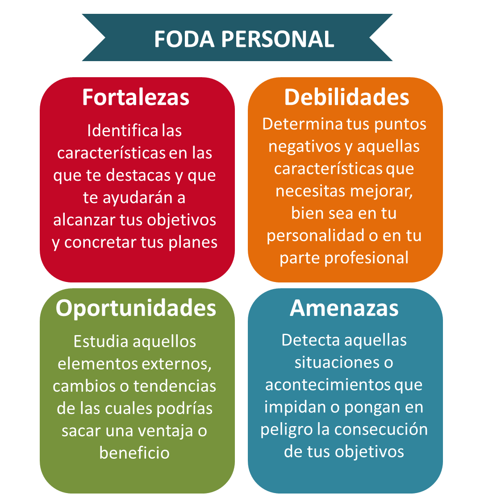

¿Qué es el FODA personal?
El FODA personal también conocido como DAFO viene de las siglas Fortalezas, Oportunidades, debilidades y amenazas. Es una herramienta de autoconocimiento adaptada a la persona y no a una empresa que le permite entender mejor sus aspectos internos(Fortalezas y debilidades), así como los externos (oportunidades y amenazas)
Este análisis influye en la toma de decisiones para el desarrollo personal y profesional del individuo
El origen del análisis FODA se atribuye a Albert Humphrey en los años 60. Inicialmente se llamó SOFT siglas por Satisfacción, oportunidad, fallos presentes y amenazas(Threats en inglés). Eventualmente evolucionó al FODA actual que es usado tanto en empresas como en personas.
Cómo hacer un FODA personal paso a paso
Para hacer un análisis FODA personal pueden usar una matriz FODA personal, es decir hacer una tabla dividida en cuatro cuadrantes para visualizar mejor cada uno de los aspectos a analizar
| F |
O |
D |
A |
| Identifica tus FORTALEZAS: Piensa en tus habilidades, talentos,capacidades y valores, en qué destacas o haces bien las cosas. |
Reconoce tus DEBILIDADES: sé honesto contigo mismo, reconoce que cosas te limitan, que te cuesta más o se te dificulta. |
Detecta OPORTUNIDADES: Si estás evaluando cambiar de trabajo o empezar estudios de postgrado, debes analizar tu entorno para detectar tendencias, demandas del mercado, posibilidades de becas o financiamientos entre muchos otros. |
Presta atención a las AMENZAS: Es importante detectar que factores pueden representar un obstáculo como competencia, cambios en tipos de contratos, crisis económicas y muchos otros. |
Ejemplo de FODA personal
Vamos a poner de ejemplo de FODA personal a alguien que quiere seguir una carrera en diseño gráfico.
| F |
O |
D |
A |
|
FORTALEZAS:Talento y creatividad, gusto por el arte. Dominio en diseño en Adobe y Phothosop
|
DEBILIDADES:Poca experienza en Marketing de redes y diseño UX/UI
Inglés básico.
Falta de dinero para adquirir hardware y software moderno.
|
OPORTUNIDADES:
Alta oferta de trabajo en Linkedln.
Cursos gratuitos o muy económicos en línea.
Empresas con clima laboral positivo.
|
AMENAZAS:
Aparición de herramientas de diseño basadas en IA.
Clientes que prefieren abaratar costos usando IA o contratar freelancers de bajo costo.
Cambios en políticas de plataformas freelance.
|
Esta matriz FODA personal pone en evidencia el contexto al cual se enfrenta una persona que desea seguier su camino por el diseño gráfico. Si bien le encanta la carrera, tiene talento y las empresas cuentan con buen clima laboral y alta demanda, aún le falta acceso a herramientas que le permitan desarrollarlo y existe la amenaza cada vez real de la inteligencia artificial, qu podría reducir la demanda y cambiar la forma en que se valoran ciertos servicios.
Sin embargo, con Objetivos claros, formación continua, originalidad y creatividad que lo diferencien, sigue habiendo un espacio para destacar, incluso en un mundo cada vez más automatizado.
Fortalezas,oportunidades,debilidades y amenazas personales
En términos generales, podemos decir que las fortalezas implican liderazgo,talentos,formación académica, buena red de contactos, mientras que las debilidades implican falta de experienza o ciertas habilidades, mal caracter o estresarse con facilidad. Las oportunidades del FODA personal tienen de ejemplo factores externos positivos como ofertas de trabajo o becas de estudios y las amenazas, los negativos que pueden jugar en contra,como alta competencia o crisis económica o política.
Como conclusión, el DAFO o FODA personal no es solo una herramienta de análisis, es una guía para tomar decisiones conscientes, claras y estratégicas. Al reconocer tus fortalezas y debilidades e identificar las oportunidades y amenazas, el FODA personal te permite tener una visión mas realista de tu situación para actual acorde.
Ya sea que estés en duda sobre qué camino profesional seguir, qué trabajo escoger o incluso si hacer ese viaje soñado, conocerte mejor gracias a este ejercicio te brindará claridad para avanzar.
